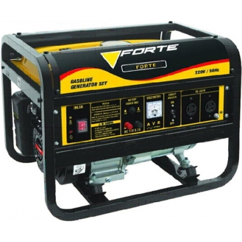

Немного о синхронных и асинхронных электрогенераторах

Электрогенератор или альтернатор, как его часто
называют специалисты, преобразует механическую энергию вращения вала
двигателя в электрическую энергию переменного тока. В зависимости от его
типа и конструкции электростанции лучше подходит для решения тех или
иных задач.
Синхронный или асинхронный?
Для
возбуждения ЭДС (электродвижущей силы) в обмотках статора (неподвижная
часть генератора) нужно создать переменное магнитное поле. Это
достигается вращением намагниченного ротора (другое его название -
якорь). Для "намагничивания" используют разные примеры.
Синхронный генератор
У
синхронного генератора (IP23) на якоре имеются обмотки, на которые
подается электрический ток. Изменяя его величину, можно влиять на
магнитное поле, а следовательно, и на напряжение на выходе статорных
обмоток. Роль регулятора прекрасно исполняет простейшая электрическая
схема с обратной связью по току и напряжению. Благодаря этому
способность синхронного альтернатора "проглатывать" кратковременные
перегрузки высока и ограничена лишь омическим (активным) сопротивлением
его обмоток, т.е. легче переносят пусковые нагрузки.
Однако у
такой схемы есть и недостатки. Прежде всего, ток приходится подавать на
вращающийся ротор, для чего традиционно используют щеточный узел.
Работая с довольно большими (особенно во время перегрузок) токами, щетки
перегреваются и частично "выгорают". Это приводит к плохому их
прилеганию к коллектору, к повышению омического сопротивления и к
дальнейшему перегреву узла. Кроме того, подвижный контакт неизбежно
искрит, а значит, становиться источником радиопомех. И самый основной
недостаток низкая степень защиты от внешних воздействий таких как: пыль,
грязь, вода, т.к. синхронный генератор охлаждается "протягивая" через
себя воздух, соответственно все что находится в воздухе может попадать в
генератор.
Если генератор щёточный, чтобы избежать
преждевременного износа, рекомендуется время от времени контролировать
состояние щеточного узла и при необходимости очищать либо менять щетки.
Кстати, после их заменены, желательно дать им время "приработаться" к
коллектору, а уж за тем нагружать станцию "по полной программе".
Многие
современные синхронные генераторы снабжены безщеточными системами
возбуждения тока на катушках ротора (их еще называют brash-less). Они
лишены вышеуказанных недостатков связанных с щёточным узлом, а потому
предпочтительнее.
- для трёхфазных синхронных генераторов допустимый перекос фаз 33%
- коэффициент нелинейных искажений 13-25% (в зависимости от производителя)
Асинхронный генератор
Асинхронный
генератор (IP54) вообще не имеет обмоток на роторе. Для возбуждения ЭДС
в его выходной цепи используют остаточную намагниченность якоря.
Конструктивно такой альтернатор намного проще, надежнее и долговечнее.
Кроме того, поскольку обмотки ротора охлаждать не нужно (их просто нет),
корпус асинхронного генератора полностью закрыт, что позволяет
исключить попадание пыли и влаги. Асинхронные альтернаторы не
восприимчивы к коротким замыканиям, поэтому лучше подходят для питания
сварочных аппаратов.
К сожалению у асинхронников тоже есть
недостатки, например способность "проглатывать" пусковые перегрузки у
них ниже, чем у синхронных генераторов. Но этот недостаток решается
путем оснащения станций системой "стартового усиления". (см. выше). Как
правило все профессиональные асинхронные генераторы оснащены системой
стартового усиления.
- для трёхфазных асинхронных генераторов допустимый перекос фаз 60-70%
- коэффициент нелинейных искажений 2-10% (в зависимости от производителя)
Одно - и трехфазные генераторы
Зачем
нужны непонятные три фазы, когда и с одной-то не разберешься? Но в том
то и дело, что без них никуда. Начнем с того, что трех фазная схема
подключения позволяет передавать энергию трех однофазных источников
всего по трем проводам (в случае однофазной схемы потребовалось бы
выделить по два провода на каждый такой источник).
В итоге при
равной выходной мощности трехфазный альтернатор компактнее, легче и
имеет больший КПД. К тому же он более универсален - на выходе дает как
бытовые 220 вольт, так и промышленные 380 вольт.
Одно- или
трехфазные генераторы. Их название вытекает из назначения - питать
соответствующих потребителей. При этом к однофазным генераторам,
вырабатывающим переменный ток напряжением 220 вольт и частотой 50Гц,
можно подключать только однофазные нагрузки, тогда, как к трех фазным
(380/220 В, 50Гц) - и те, и другие (на приборной панели имеют
соответствующие розетки, количество которых у агрегатов разных
производителей разное).
С однофазными альтернаторами все более
или менее ясно: главное - правильно "посчитать" всех своих потребителей,
учесть возможные проблемы (например, высокие пусковые точки) и выбрать
агрегат с соответствующей реальной выходной мощностью. При подключении к
трехфазным генераторам трехфазных же нагрузок ситуация аналогичная.
А вот при подключении к трехфазникам однофазных потребителей возникает проблема, именуемая перекосом фаз.
Что такое перекос фаз?
При
подключении нагрузки на одну фазу трехфазного альтернатора используется
только одна обмотка статора, в то время как в нормальном режиме
задействованы все три, соответственно, реально снять получиться не более
чем 33% трехфазной мощности для синхронных IP23, или порядка 70-80% для
асинхронных IP54 и синхронных IP54 (High Protection). Если попробовать
нагрузить агрегат сильнее, статорная обмотка окажется перегруженной и
может "сгореть".
Другое дело, когда генератор сделан с "запасом".
Например, когда при работе на три фазы его обмотки трудятся в треть
силы. Тогда неравномерность распределения нагрузки (это и есть так
называемый "перескок фаз") может составить хоть все 100%. В любом
случае, не зависимо от предельных возможностей электростанции, нагрузку
следует распределять равномерно - это увеличит КПД альтернатора и снизит
нагрев у статорных обмоток.